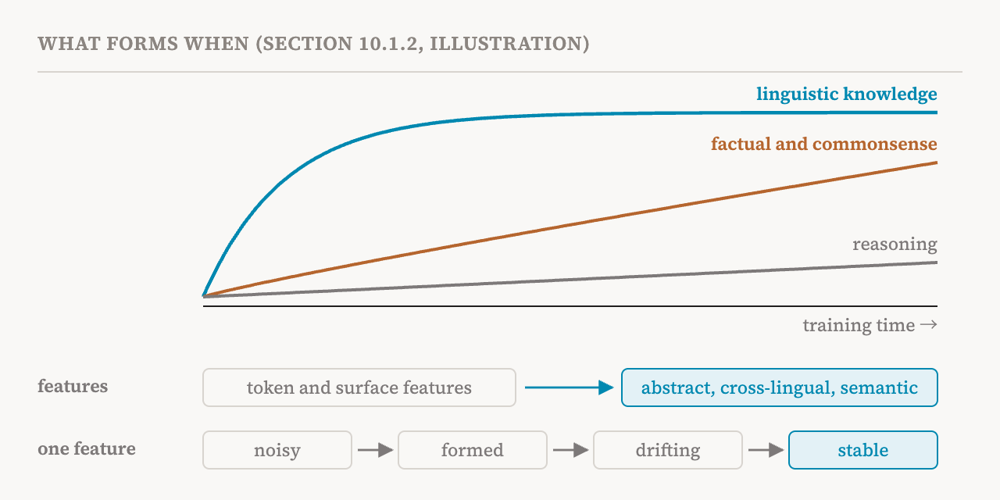
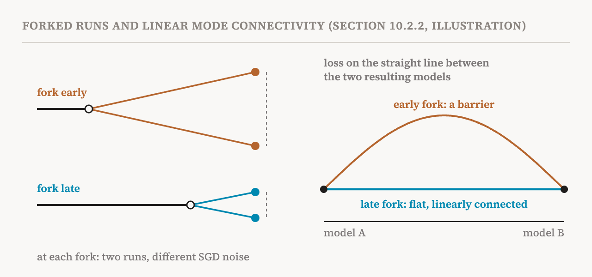

Part 25 ended with a dimension the series has so far left out: time. This part opens a new group, on training and data, with the start of the book's tenth chapter, sections 10.1 and 10.2 (pages 82–86).
Most interpretability research treats a trained model as fixed. It asks what the activations represent, which components carry out a behaviour, or how an intervention changes the output, always at one particular checkpoint, a saved copy of the model. But a model does not come into the world fully formed. It is the product of a learning process. Public model suites that release their intermediate checkpoints, such as Pythia, trained on the publicly available Pile corpus, now let researchers study the whole path of training systematically.
The book separates two aims. Longitudinal analysis treats learning dynamics as something to explain: how and why mechanisms form, change, settle or disappear during training. The second aim uses training dynamics as a tool. Changes across checkpoints can help identify mechanisms, decide between competing explanations, predict later capabilities or failures, and guide interventions on training. The book cites Saphra's argument that a model's internals can only be fully understood in light of how they developed: an analysis confined to the final checkpoint risks getting wrong the function or the origin of the structures it finds there.
What the data decides
The order in which capabilities appear is strongly constrained by the statistics of the training data. Language models acquire words in an order predicted mainly by how often each word appears in the corpus. Children are different: the order in which they learn words also depends on things like how concrete a word is and how long it is. Graded preferences, such as the usual order of adjectives, are also learned from corpus statistics on a similar schedule.
The book places this under a more general pattern, the distributional simplicity bias. Networks trained with stochastic gradient descent (SGD), the usual training method, learn the low-order statistics of their data before the higher-order ones. Roughly speaking, low-order statistics are things like how often each token appears and which tokens tend to come next to each other; higher-order ones involve longer and more complex combinations. In language models, the frequencies of token n-grams, short runs of n tokens, correspond to statistical moments of the embedding vectors, so models early in training approximate the simple token interactions well and fit the more complex structure later.
Showing that the data causes a capability is harder than showing a link. Studies have found strong correlations between data statistics and what a final model can do; one 2022 study, for instance, found that models do few-shot arithmetic better on numbers that are more frequent in their pretraining data. The causal effect of data statistics on factual predictions can also be estimated directly. The strongest evidence would come from controlled changes to the training data, but that is rarely done at realistic scale because it is expensive. A notable exception, a 2026 study called Deep Ignorance, trained three models of 6.9 billion parameters on 550 billion tokens each, with different filtering of the data, and showed that filtering can remove knowledge of proxies for biohazardous capabilities. Part 28 returns to it.
Smaller, synthetic experiments show how specific the data's influence can be. A 2022 study trained transformers on synthetic sequence tasks and found that in-context learning, using examples in the prompt, emerges only when the data has the right properties. Two were each necessary: burstiness, where items of the same class appear in clumps within a sequence rather than spread evenly, and a long tail of rare classes. A uniform, non-bursty version of the same content instead led to in-weights learning, where the answers are stored in the parameters rather than read from the context. A Zipfian distribution, with a few very common classes and many rare ones, let both kinds of learning exist together. Factual knowledge is similar: its acquisition goes through a long plateau, shaped by how often each entity appears in the data.
Features form, settle and drift
Following features through training has a technical difficulty of its own. Representations at different checkpoints may sit in different bases, so a feature found at one checkpoint has no automatic counterpart at another. This is like the mismatch between layers that weakens the logit lens of part 21, where middle layers organise information differently from the final one. A probe or a sparse autoencoder trained at one checkpoint degrades in the same way when applied to another, and longitudinal methods differ mainly in how they solve this correspondence problem.
The model diffing methods of part 24 are useful here, and together with other studies they have found a broadly consistent order. Linguistic knowledge is acquired early and quickly; factual and commonsense knowledge build up slowly; reasoning abilities stay weak throughout pretraining. Studies at the level of features add detail. Features for tokens and surface statistics form first, and abstract, cross-lingual and semantic features form later. Individual features develop from noisy, unstructured activations into coherent ones with a clear meaning.

Formation is followed by consolidation. After its meaning is established, a feature's direction keeps drifting for a while and eventually stabilises. Different modules converge at different rates. And once formed, representations and the timing of their acquisition are largely the same across random seeds, as a study of fifty Pythia pretraining runs found.
But the book stresses that a capability being stable does not mean its implementation is. The components carrying an algorithm can change while the algorithm itself stays. Mechanisms can be repurposed: the induction heads of part 19 turn, over training, into the function vector heads that come to dominate few-shot in-context learning. Structures can also disappear entirely. In the synthetic settings of the 2022 study above, in-context learning turned out to be transient. It arose and then gave way to in-weights learning while the training loss was still falling, and regularisation affected how long it lasted. Feature drift can also produce false positives in model diffing, the problem part 24 warned about. More broadly, all of this limits how far in time any mechanistic claim reaches: an explanation checked at one checkpoint may not hold at other checkpoints of the same model.
Time as a tool
The book's second aim turns the trajectory into an instrument. This framing is fairly new in mechanistic interpretability, but the idea is older. Early theoretical work showed that different singular modes of the relationship between a network's inputs and outputs, roughly its independent patterns, are learned at different rates, with the stronger ones tending to be learned first, so the order of learning says something about the structure of the task. Methods for comparing representations, such as SVCCA, measure when layers and representations converge during training.
Three kinds of method locate a change in time and then in the model. The first is attribution along the trajectory. TracIn, which part 30 explains, estimates a training example's influence on a prediction by adding up gradient products at checkpoints along the run. Each checkpoint contributes separately, so looking at the contributions shows when an example had the most influence.
The second is the learning curve of a single token in context, usually measured on held-out text at every checkpoint, the finest-grained tool the book lists. A 2024 study extracted such curves for one million held-out tokens across five pretraining runs and summarised each by when the token is first learned, how likely its loss is to get worse again later, and how much it varies within and between runs. Frequent tokens, and tokens in short, frequent contexts, are learned earlier, end with lower surprisal (the loss, which measures how unexpected the token is to the model) and vary less. In stages, models learn short repetitive phrases before longer coherent text, consistent with learning n-grams first and then slowly refining predictions for rarer cases. Individual tokens also show sudden rises or falls in loss that recur at the same points across runs, which can flag possible transitions, the subject of part 27.
The third localises a change to components. Once a change is pinned down in time, the components that changed in that window are candidates for the mechanism. A 2025 study applied refined versions of the local learning coefficient, a measure of a model's effective complexity that part 27 introduces, to the individual attention heads of a small two-layer transformer made only of attention. The weight-refined version restricts the measure to one head's parameters; the data-refined version evaluates it on a chosen subset of data. Over training, the weight-refined curves of different heads separate, with distinct patterns for different types of head, showing how the heads differentiate into roles. The data-refined version shows what a head specialises in: on code, disturbing the weights of the multigram heads in layer 1 hurts the loss much less than disturbing the induction heads.
The same analysis found a multigram circuit that had not been documented before. A multigram is a common token sequence in the data whose tokens may appear with gaps between them. Heads with a higher weight-refined coefficient tend to memorise more multigrams; heads with lower values tend to follow simple algorithms such as induction or matching brackets. Unlike the induction scores of the 2022 induction-head study, this measure does not need a head type to be specified in advance. But it is expensive to estimate and has so far been shown only on toy models.
Forked runs
The most basic experiment on a training trajectory is the forked run. It starts two or more continuations from the same checkpoint, changes a single factor, such as the SGD noise, the order of the data or the random seed, and compares the models that result. A standard way to compare them is linear mode connectivity. Two networks are linearly mode connected if the loss stays low all along the straight line between their parameters in weight space, that is, if there is almost no loss barrier between them. A 2020 study used this to measure how sensitive training is to SGD noise, restarting training from different checkpoints with different noise each time. Early in training, the runs could end up in different basins of the loss. Later, they tended to reach solutions that were linearly mode connected: the outcome of training had become stable to SGD noise.

Other changes fit the same design. Degrading the data early in training, in a 2019 study by blurring images, causes lasting deficits that the same degradation later does not, which shows that networks have critical learning periods. Forking a run across many random seeds separates properties of the training setup from accidents of a single run. The smeared-key change of part 19, which let induction circuits form within one layer, is the same design with a change to the architecture.
Mode connectivity has also been given a mechanistic reading. A 2023 study called two models mechanistically similar when they are unaffected by the same transformations of their input. It conjectured that two solutions that cannot be linearly connected, even after reordering their neurons, must be mechanistically different, and found that the different solutions it constructed were connected by curved (quadratic) paths but not straight ones. On this reading, a loss barrier between two checkpoints suggests that their mechanisms differ. The book adds the caution in the other direction: the absence of a barrier does not guarantee that the mechanisms are the same.
How long does an explanation last?
Learning dynamics lets researchers ask whether a mechanistic claim holds more widely than one checkpoint. An explanation of a trained model's internals, such as the direction of a feature, does not by itself establish whether the mechanism works the same way at other stages of the same model's training, or in independently trained models of the same kind. Learning-dynamics analysis can re-test the explanation on neighbouring checkpoints or on runs with different seeds. That shows how stable the explanation is as training continues and how sensitive it is to variation in training, which is the stability dimension of part 20, extended in time.
| Aim | Question | Examples |
|---|---|---|
| Something to explain | How do mechanisms form, change, settle or disappear? | Order of acquisition; feature formation and drift; repurposed or transient structures |
| A tool | What can change over time tell us about the model? | Attribution by checkpoint; per-token learning curves; refined complexity measures; forked runs |
| Term | Meaning |
|---|---|
| Learning dynamics | How a model's behaviour and internals change during training |
| Checkpoint | A saved copy of a model at one point in training |
| Longitudinal analysis | Studying the same model across many checkpoints |
| Distributional simplicity bias | Learning low-order statistics of the data before higher-order ones |
| Burstiness | Items of the same kind appearing in clumps rather than spread evenly |
| In-weights learning | Storing what is learned in the parameters, rather than reading it from the context |
| Correspondence problem | Matching a feature at one checkpoint with the same feature at another |
| Feature drift | A feature's direction continuing to move after its meaning is set |
| Per-token learning curve | One token's loss in context, followed over training |
| Refined local learning coefficient | A complexity measure restricted to one component or one subset of data |
| Forked run | Continuations trained from one checkpoint with a single factor changed |
| Linear mode connectivity | The loss staying low along the straight line between two models' parameters |
| Critical learning period | An early window in which a problem with the data does lasting harm |
Next, part 27 looks at the moments when training stops being gradual: sudden jumps, grokking, and why they happen.